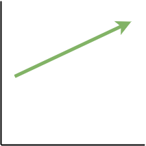
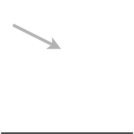

tone


"to be eternal"
"the friend"
"who believe"
"to love"
Toaq (pronounced [tʰo.aŋ]) is a constructed language based on predicate logic. It is also a tonal language — that is, it uses changes in pitch to distinguish grammatical meaning. Its richness in tones enables it to express things very succinctly, because grammatical information (like part of speech) is largely expressed via tone rather than separate function words.
The vocabulary of Toaq is generally a-priori, though in a select few cases some inspiration may have been taken from such wonderful languages as Mandarin Chinese and Thai, while some words bear resemblance to corresponding roots in Lojban.
Within the spectrum of constructed languages, Toaq would fall into engelang territory, because it was created with specific (objectively testable) goals in mind. In particular, Toaq is supposed to be a language that is...
However, the above features would mean little to the author if the language were not also beautiful regardless of them. Words are being slowly and carefully selected for each concept and the dictionary has been designed according to principles of logic, consistency and extensibility. The aesthetics of the language are just as important to the author as the underlying logic, so perhaps it would be more fitting to speak of Toaq as an engineered artlang.
The appendix at the end of this document contains a sample text along with a voice recording of the same text, as well as other useful supplements.
But first, the author wishes an enjoyable journey through this document.Toaq comes with a simple phonology that is characterized by a complete lack of consonant clusters. Its syllables are rich in vowels and carry one of eight tones, giving the language a melodic character.
There are 18 consonant phonemes.
| Labial | Alveolar | Palatal | Velar | Glottal | |
|---|---|---|---|---|---|
| Nasals | m | n | ŋ | ||
| Plosives | pʰ b | tʰ d | kʰ g | ||
| Affricates | t͡sʰ | t͡ɕʰ d͡ʑ | |||
| Fricatives | f | s | ɕ | h | |
| Taps | ɾ | ||||
| Laterals | l |
Many of these phonemes have several valid allophones that may be used by people unable to use the standard pronunciation. For example, any palatal sound may be replaced by its post-alveolar counterpart.
Below is a list of phoneme-grapheme correspondences along with possible alternative pronunciations.
| Phoneme | Grapheme | Alternative pronunciation |
|
|---|---|---|---|
| /m/ | m | ||
| /n/ | n | ||
| /ŋ/ | q | [ɳ] [ɲ] [ɴ] | |
| /pʰ/ | p | ||
| /b/ | b | ||
| /tʰ/ | t | ||
| /d/ | d | ||
| /kʰ/ | k | ||
| /g/ | g | ||
| /t͡sʰ/ | c | ||
| /t͡ɕʰ/ | ch | [t͡ʃ] | |
| /d͡ʑ/ | j | [d͡ʒ] | |
| /f/ | f | ||
| /s/ | s | ||
| /ɕ/ | sh | [ʃ] | |
| /h/ | h | [x] [χ] | |
| /ɾ/ | r | [r] | |
| /l/ | l |
NEW: Interactive keyboard of Toaq letters
There are five vowel phonemes: /a/, /u/, /i/, /o/ and /e/.
| Grapheme | Pronunciation | Alternative pronunciation |
|
|---|---|---|---|
| a | [a] | ||
| u | [u] | [ʊ] in closed syllables | |
| i | [i] | [ɪ] in closed syllables | |
| o | [ɔ] | [o] before /a/ | |
| e | [ɛ] | [e] before /a/ and /o/ |
The following diphthongs exist:
When /i/ is the final part of a falling diphthong, it may be pronounced [ɪ] or [j].
When /o/ is the final part of a falling diphthong, it may be pronounced [ʊ] or [w].
Phonetically, all but the first row of diphthongs are technically disyllabic (or bimoraic) (except /ao/), but they can still occur as part of the same syllable, because a Toaq syllable may contain up to three moras, more on that in the following section.
Vowel length is not phonemic. In slow and clear speech, stressed vowels tend to be long in open syllables and short in closed syllables, and vowels are generally short in syllables which carry the neutral tone. However, pronouncing a vowel longer or shorter than usual does not render a word invalid.
NEW: Interactive keyboard of Toaq letters
ATTENTION: Due to a recent update to Toaq's phonotactics, syllables can now begin with a vowel.
The syllable structure of Toaq is based around moras and can be illustrated by the following diagram.
A syllable may have anywhere from one to three moras. For the purpose of counting moras, the initial consonant plus the following vowel count as one mora, the next vowel counts as the second mora and a third vowel or a final consonant count as the third mora.
Every syllable carries one of eight tones.
Any consonant other than /ŋ/ is a valid initial. Consonant clusters (combinations of more than one consonant phoneme in a row) are not permissible in onset position, but can occur at the word or syllable boundary (/ŋ/ followed by a simple onset).
The vowel group in the middle of a syllable is subject to the following constraints:
The coda can either be empty or /ŋ/. The coda cannot be /ŋ/ after a falling diphthong (/ai/, /ao/, /ui/ and /oi/).
As mentioned in the previous section, any combination of two vowels other than the falling diphthongs /ai/, /ui/ and /oi/ is pronounced disyllabically or bimoraically. Also, the emphasis is always on the first vowel of a syllable, even in a rising diphthong, unless the syllable begins with a simple vowel followed by /ao/, in which case the /a/ is stressed. For example, puaq is pronounced [ˈpʰu.aŋ] and not [pʰu.ˈaŋ] let alone [pʰwaŋ], jia is pronounced [ˈd͡ʑi.a] and not [d͡ʑi.ˈa] or [d͡ʑja], and kuao is pronounced [kʰu.ˈa.o] or [kʰu.ˈa.ʊ] and not [ˈkʰu.a.o] or [ˈkʰu.aʊ].
The list of possible syllables resulting from the above rules are summarized by the following table:
| m n p b t d k g c ch j f s sh h r l |
a | q | |
|---|---|---|---|
| i | |||
| o | |||
| u | q | ||
| a | q | ||
| i | |||
| o | |||
| i | |||
| o | q | ||
| e | q | ||
| i | q | ||
| a | q | ||
| i | |||
| o | |||
| o | q | ||
| e | q | ||
| o | q | ||
| a | q | ||
| i | |||
| e | |||
| e | q | ||
| a | q | ||
| i | |||
| o | q | ||
This table can be read from left to right like a flowchart. By starting in the left-most column (the consonants) and always going to a cell that is adjacent to the right edge of the cell you are currently in, you will always get a valid syllable. Also, once you have reached a light green cell, you can stop at any moment as you will already have a complete syllable.
This is a list of example words for each possible kind of syllable:
| Syllable | Example | Pronunciation | Translation |
|---|---|---|---|
| CV | ji | [d͡ʑiː] | "I, me, myself" |
| CVq | raq | [ɾaŋ] | "about, pertaining to" |
| CVv | jai | [d͡ʑaj] | "to be happy" |
| CvV | dua | [ˈduː.a] | "to know" |
| CvVq | ruaq | [ˈɾuː.aŋ] | "to assert" |
| CVV | keo | [ˈkʰeː.o] | "but, however" |
| Cvai | nuai | [ˈnuː.aj] | "money" |
| Cvao | luao | [lu.ˈaː.ʊ] | "lip" |
A speaker of Toaq need not be consciously aware of all these rules, unless they wish to invent new words, but then they can consult a table such as the one above or check with a parser. A fluent speaker, however, is likely to have the possible syllables as well as their correct pronunciation internalized through exposure and usage and will have an intuitive understanding of what can and cannot be a Toaq syllable.
NEW: Interactive keyboard of Toaq letters and syllable endings
Toaq's syntax is where most of the magic happens. While the language, at its core, consists of almost nothing but predicates, it is the tones that perform various grammatical functions to create a rich and elegant syntax.
ATTENTION: There has been an update to the tones.
There are eight meaningful tones in Toaq. The following table lists for each tone its name, its spelling, an image describing its pitch contour and an example word using that tone (the first tone is shown adjacent to another tone, because it cannot occur in isolation).
| Even tone | Rising tone | Falling-rising tone |
Falling tone |
|---|---|---|---|
| ā | á | ǎ | ả |
|
 | |
|
| dảqmīq "to be eternal" |
pái "the friend" |
chǐ "who believe" |
mải "to love" |
| Rising-falling tone |
Low tone | Creaky rising tone |
Neutral tone |
|---|---|---|---|
| â | à | ã | a |
 |
 |
 |
 |
| jêo "that it's true" |
tì "at" |
fãq "often" |
hi "which" |
Listen to the sound examples to get a better idea of how each tone should sound.
There are three tones that go through two phases, with a change of direction in pitch in the middle. These tones are the falling-rising tone, the rising-falling tone and the creaky falling-rising tone. When these tones are part of a diphthong, it is important that the falling part of the tone begin on the stressed vowel (which will always be the first vowel of a syllable, unless the syllable contains vowel + /ao/. See the section on syllable structure).
The following table shows how diphthongs are to be pronounced when they carry one of these tones, using the example syllable neo.
| Falling-rising tone |
Rising-falling tone |
Creaky falling-rising tone |
|---|---|---|
| něo nè + ó |
nêo né + ẻo |
nẽo nè + ʔ + éo |
It is recommended to listen to the sound examples. They are more exact and probably more meaningful than the explanation in terms of tone combinations.
The neutral tone is special in that there is no universally correct pronunciation. In general, syllables carrying the neutral tone are unstressed, lighter and shorter than other syllables, but more importantly, their pronunciation in terms of pitch depends on the tone of the previous syllable. One could also say that the first seven tones are absolute tones and the eigth tone is a relative tone.
The following table shows how the neutral tone (grey) is pronounced after each of the seven main tones (green):
| 1 + 8 | 2 + 8 |
|---|---|
 |
 |
| Tỉshā da. "There's an arrival taking place." |
súq bi "as for you..." |
| 3 + 8 | 4 + 8 |
|---|---|
 |
|
| tǎo na "those who act" |
Jải ba. "May there be happiness." |
| 5 + 8 | 6 + 8 |
|---|---|
|
|
| dâi tu rái "that anything is possible" |
tì sa rái "somewhere" |
| 7 + 8 | 8 + 8 |
|---|---|
|
 |
| dǔa bũ na "those who do not know" |
jí ru sa pái "me and some friends" |
It should be noted that a hyper correct pronunciation of the neutral tone is not required, as long as the produced tone cannot be confused with the first tone. The reason for this will become apparent later on.
The tones introduced in the last section all have very specific functions. Their job is to specify to which part of speech a given word belongs. Each tone corresponds to a different part of speech. The following table lists the correspondences:
| Tone# | Tone Name | Unicode | ASCII | Function |
|---|---|---|---|---|
| 1 | Even tone | ā | a- | Compound |
| 2 | Rising tone | á | a/ | Argument phrase |
| 3 | Falling-rising tone | ǎ | aV | Relative clause |
| 4 | Falling tone | ả | a? | Predicate phrase |
| 5 | Rising-falling tone | â | a^ | Content clause |
| 6 | Low tone | à | a\ | Preposition |
| 7 | Creaky rising tone | ã | a~ | Adverbial phrase |
| 8 | Neutral tone | a | a | Particle |
Instead of writing the ASCII tone marks, it is also acceptable to write the tone numbers after a syllable to indicate its tone.
When a word carries one of these tones on its first syllable, it marks the beginning of a new phrase of the respective kind. For example, a word carrying a rising tone becomes (or starts) an argument phrase (a noun), and a word carrying a falling tone becomes (or starts) a predicate phrase (a verb), and so on.
Tones 1 through 7 apply exclusively to predicate words. Any predicate word can carry any of those seven tones, and each tone produces a different part of speech.
On the other hand, the 8th tone (neutral tone) can only appear in function words (i.e. every word that is not a predicate word). A predicate word can never carry the neutral tone.
Usually, the tone of the preceding syllable will influence the pronunciation of a function word in the neutral tone as shown in the previous section.
Unlike the tones found in many natural languages, where a different tone signifies a different lexical entry, the tones in Toaq never change the lexical content of a word, so even if a speaker were to get the tones wrong, the listener would still get a rough idea of what the sentence is about and would only have to guess how the different parts are related syntactically.
The different tones and the parts of speech they create will be discussed in detail in later sections.
Sentence structure in Toaq generally follows the following pattern:

As the illustration shows, there are four parts to a sentence, indicated by the boxes. Boxes with a gray background are optional components, while the green box is mandatory. Of the green box, only the predicate is required. Arguments may or may not be present. This means that the simplest possible sentence is a bare predicate.
Even though sentence prefix, prenex and illocution need not be supplied overtly, only the first two can be logically absent, whereas illocution is always present, even if just implicitly. When illocution is not explicitly stated, it is assumed to be the default assertive illocution.
All of these will be examined in more detail in their dedicated sections. For now, a number of examples shall illustrate the different levels of complexity of Toaq sentences.


How these meanings come about will be discussed in later chapters. For now, just keep in mind the modular character of Toaq sentences.
In spontaneous speech, humans do not always make complete sentences. Sometimes, it is enough to utter a noun in isolation, perhaps in response to a question, or when making an observation. Sometimes, we begin a sentence one way and then find ourselves not wanting to continue it the same way, leading us to start over, and so on. In order to account for the human factor in language usage, Toaq permits certain things to be uttered in isolation to make what are termed fragmental sentences.
Almost any kind of phrase is permitted as a fragment:
The following are examples of fragmental sentences:
| (FRG.1) | nèo | tóqfūa | |
|---|---|---|---|
| on | table | ||
| "on the table" | |||
| (FRG.2) | níchāq | bi ... | |
|---|---|---|---|
| today | end.pre | ||
| "about today ..." | |||
| (FRG.3) | hu | mí Jỏsēfō! | |
|---|---|---|---|
| voc | Joseph | ||
| "Hey, Joseph!" | |||
It is important to note that while fragmental sentences are valid as part of discourse, a statement must always be complete, which requires that it contain at least a predicate. Sentences (and fragmental sentences) exist on disourse level, while statements are part of any complete sentence and are what appears in sub-clauses. More on this in the section on relative clauses and in the section on content clauses.
Predicates are part and parcel of any language built around predicate logic. Toaq tries to provide regular place structure patterns. Predicate words of similar topics have parallel place structures.
Predicates in Toaq are multigrade; each predicate word is really a family of related predicates differing in their arity. What does this mean? Let's consider the predicate word fai "often":
| fai : ___ occurs frequently/often; ___ frequently satisfies property ___. |
This is how a dictionary might list the word. fai is actually a family of predicates whose exact definition depends on how many arguments are supplied to it, in the case of fai either one or two (or zero) arguments. One could write:
| fai1 : ___ occurs frequently/often. |
| fai2 : ___ frequently satisfies property ___. |
Two different predicates by the same name, which differ in the number of arguments they relate. Which one of them applies in a predication depends on how many arguments are being supplied. If only one argument is supplied, then the unary definition is used. If there are two arguments, then the binary one is used, and so on.
| (PRD.1) | Chủq | jí | chókō. | |
|---|---|---|---|---|
| eat | I | chocolate | ||
| "I am eating chocolate." | ||||
| (PRD.2) | Chủq | jí. | |
|---|---|---|---|
| eat | I | ||
| "I am eating." | |||
For some predicate words, the difference between different arities is very minor, as when lower arity versions simply lack later argument places of the higher arity versions (like chuq "eat" above), but sometimes, as with words like fai "often" above, the argument type changes between arities.
Predicates in Toaq range from nullary to n-ary (most predicate words do not go beyond three argument places, and predicate words only very rarely go to four). The definition of a nullary predicate is usually not given in a dictionary, because it is always predictable. For any predicate X, predicating it without any arguments supplied to it results in a meaning of the likes of "There is X-ing going on" (as in, someone is X-ing).
| (PRD.3) | Sủaq | da. | |
|---|---|---|---|
| sing | ass | ||
| "There is singing going on." | |||
The fact that the meaning of predicates changes with their arity also has an important effect on negation. When a non-maximal arity predicate is negated, it means that the higher-arity versions cannot be true either. The negation of chủq jí ("I eat") means that there is no event of eating going on in which I am the eater (in other words, that I am not eating anything), and the negation of chủq ("There is eating going on") means that there is no eating going on at all (in other words, that nobody is eating) at the time and place under discussion.
Predicate phrases come in many shapes and forms, from simple one-word phrases to complex multi-word phrases. These different kinds of predicate phrases will be discussed in the following sections.
Simple predicates are the most basic kind of predicate phrase.
| word | + | ◌̉ | = | predicate |
Simple predicates are made up of a single predicate word carrying the falling tone on its first syllable. For example, poq + ◌̉ = pỏq "to be a person".
| (SMP.1) | Jải | jí | da. | |
|---|---|---|---|---|
| be.happy | I | ass | ||
| "I am happy." | ||||
| (SMP.2) | Mải | jí | súq. | |
|---|---|---|---|---|
| love | I | you | ||
| "I love you." | ||||
| (SMP.3) | Mả | pải | súq | jí | moq? | |
|---|---|---|---|---|---|---|
| whether | be.a.friend | you | I | int | ||
| "Are you my friend?" | ||||||
Simple predicates are very common, but are far from the only kinds of predicates. Often, they function as building blocks of more complex predicates, such as serial predicates.
Individual predicate words can be chained together to form serial predicates with regular semantics. In a serial compound, the place structures of the neighbouring predicates merge to become a single new predicate.
| predicate | + | predicate | = | serial predicate |
A very basic example shall be used to walk the reader through the concept of serial predicates:
| (SRP.1) | Jảq | dẻ | súq | da. | |
|---|---|---|---|---|---|
| be.extreme | be.beautiful | you | ass | ||
| "You are very beautiful." | |||||
Why does (SRP.1) mean what it means? The serial predicate in it decomposes into the following predicate words:
| jaq2 : ___ is extremely/very ___ (property). |
| de1 : ___ is beautiful. |
In a serial predicate, when the first predicate's second argument place is a property or proposition, that place is aligned with the second predicate's first argument place and the two predicates are merged at that point:
| ___ is very | ___ | |
| ___ | is beautiful | |
| ___ is very | beautiful | |
As a result, jảq dẻ has the definition "___ is very beautiful" (or "to be very beautiful", in natural language terms).
Another example: sủai fả:
| (SRP.2) | Sủai | fả | súq | ba! | |
|---|---|---|---|---|---|
| be.quick | go | you | imp | ||
| "Go quickly!" | |||||
This breaks down as follows:
| suai2 : ___ quickly does ___ (property). |
| fa2 : ___ goes to ___. |
Aligning and merging:
| ___ quickly does | ___ | |
| ___ | goes to ___ | |
| ___ quickly | goes to ___ | |
Thus, sủai fả has the definition "___ quickly goes to ___" (or, "to quickly go somewhere").
There is no limit on how many predicate words can be combined in a serial predicate; they only have to make sense! (SRP.3) shows a tripartite serial predicate.
| (SRP.3) | Dải | jỉa | nỉqdūa | púqhō. | |
|---|---|---|---|---|---|
| be.possible | be.in.future | discover | they | ||
| "It is possible that they will make a discovery." | |||||
Serial predicates are right-grouping. Each component predicate has scope over all the following ones. For example, a serial predicate of the form A B C D would group as (A (B (C D))). In (SRP.4), the grouping is explicitly shown via brackets.
| (SRP.4) | ( Bủ | ( pủ | ( bỉaq | mải ) ) ) | líqdēo | jí. | |
|---|---|---|---|---|---|---|---|
| be.false | be.past | be.enough | love | girl | I | ||
| "The girl did not love me enough." | |||||||
When the first predicate's second argument place is a proposition, aligning and merging works slightly differently:
| tua2 : ___ makes ___ happen. |
| siq1 : ___ is clean. |
Aligning and merging:
| ___ makes happen | ___ | |
| ___ | is clean | |
| ___ makes | ___ be clean | |
| (SRP.5) | Tủa | sỉq | jí | tóqfūa. | |
|---|---|---|---|---|---|
| make.happen | be.clean | I | table | ||
| "I clean the table." | |||||
So far, only serial predicates where the first predicate allowed a sub-clause in its second argument place were discussed. There is also a second type of serial predicate, namely the case where the first predicate is a unary predicate. The way these behave is reminiscent of adjectives in English:
| (SRP.6) | Sảo | rủa | ní. | |
|---|---|---|---|---|
| be.large | be.flower | this | ||
| "That is a large flower!" | ||||
A predicate phrase like sảo rủa behaves as though its components were connected by the conjunction ru "and". In other words, sảo rủa "to be a large flower" is interpreted like sảo ru rủa "to be large and a flower". The latter construction is covered in more detail in the section on conjunctions.
| (SRP.7) | Mủaqshō | géo | nảqrēq | na, | ru | shủe | mỉe | nío | lỉqdēo. | |
|---|---|---|---|---|---|---|---|---|---|---|
| die | old | be.man | ass | and | remain | live | young | girl | ||
| "The old man dies, the young girl lives." | ||||||||||
In Toaq, names are predicates. For any name X, the corresponding predicate has the definition "___ is called X". This X must be a string of any length of valid syllables. If the name is not natively Toaq and its form would violate the rules of Toaq phonology if imported directly, then it has to be adjusted to fit.
To signal that something is a name it has to be preceded by the particle mi.
| (NAM.1) | Mỉ Jỏq | jí | da. | |
|---|---|---|---|---|
| be.named.John | I | ass | ||
| "I am John." | ||||
| (NAM.2) | Mỉ Sảrā | ní | da. | |
|---|---|---|---|---|
| be.named.Sara | this | ass | ||
| "This is Sara." | ||||
In (NAM.1) and (NAM.2), the name after mi carries a falling tone. It can also carry any other tone. The name ends automatically when the phrase started by the name's tone ends.
A name predicate of the form mi X behaves exactly like any other predicate. Any transformation that can be performed on a predicate can also be performed on name predicates.
Most commonly, it is seen as an argument:
| (NAM.3) | Fả | mí Hẻlēnā | núidōaq. | |
|---|---|---|---|---|
| goes | Helena | town | ||
| "Helena goes to town." | ||||
It can be quantified:
| (NAM.4) | Bủa | sa | jó | mỉ Mảrīa | ní | jỉo. | |
|---|---|---|---|---|---|---|---|
| inhabit | some | four | be.Maria | this | be.building | ||
| "Four Marias live in this building." | |||||||
And it can have a relative clause attached to it:
| (NAM.5) | Mí Pỉtā | pǔ | gẻq | súq | hóa | pa | pải | jí. | |
|---|---|---|---|---|---|---|---|---|---|
| Peter | who.did | meet | you | him | end | be.friend | I | ||
| "The Peter you met is my friend." | |||||||||
And of course it can also be used in serial predicates and anywhere else a predicate can be used.
There are two kinds of quotations in Toaq. Single-phrase quotes and full-text quotes. The former type works much like names, but instead of prefixing mi to the quoted phrase, the prefix shu is used.
| shu : turns following phrase X into predicate with definition "___ is the word/expression X". |
| (QUO.1) | Jảq | dẻ | shú núai | |
|---|---|---|---|---|
| very | beautiful | 'nuai' | ||
| "The word 'nuai' is very beautiful." | ||||
Without shu, the sentence would mean "The money is very beautiful" (nuai "money").
| (QUO.2) | Pủ | kủqshāo | jí | shú nủofūa. | |
|---|---|---|---|---|---|
| did | mean.to.say | I | 'nuofua' | ||
| "I meant to say 'bed'." | |||||
The other kind of quotation is the full-text quote. With it, an entire discourse can be quoted (i.e., any number of complete or fragmentary sentences). Due to the fact that, unlike single-phrase quotes, the quote does not automatically terminate at the end of a phrase, this quote type requires explicit parenthesis around the quoted text. The result is a predicate referring to the quoted text.
| mo : begin full-text quote. |
| teo : terminate full-text quote. |
| (QUO.3) | Pủ | kủq | jí | mó | « tỉ | núai | hi | rái | moq? » | teo. | |
|---|---|---|---|---|---|---|---|---|---|---|---|
| did | say | I | [quote] | be.at | money | which | anything | int | [unquote] | ||
| "I said 'where is the money?'." | |||||||||||
Compound predicates are one of the ways by which Toaq is able to extend its lexicon.
| syllable + syllable | + | ◌̄ | = | compound predicate |
Compound predicates consist of at least two syllables of which all but the first syllable carry the even tone. For example, naqdēo "to be a boy", nichāq "to be today" and tijāo "to be far away".
A compound predicate counts as a single word, and is therefore written without spaces.
It is common, though not mandatory (see Borrowings), for a compound predicate to be derived from smaller parts, which are usually other root words.
Take for instance the word tijāo "to be far away". This word derived from the words ti "to be somewhere" and jao "to be far":
| jao3 : ___ is far from ___ in property ___. |
| ti2 : ___ is at ___. |
The word jao alone expresses any sort of farness and is not limited to spatial distance (something can also be far away in time, for instance). To create a predicate which specifically expresses the spatial meaning of "far away", the predicate is compounded with the word ti to indicate the spatial component: something is far away from another in respect to where it is. This results in the new word tijāo "to be far away (spatially)", which constitutes a separate entry in the dictionary.
Using this method, it is possible to take Toaq's somewhat minimalistic root word list and derive from it thousands of new concepts.
As hinted at earlier, compound predicates are not necessarily based on other Toaq root words. When they are not, then one is dealing with a borrowing.
Even though Toaq provides a very productive way of creating new words by combining existing ones, there are times when it is desirable to take words from other languages.
The native root word list of Toaq cannot be expected to cover the entirety of human thought. New concepts and ideas arise constantly, and new terminology is needed with every new discovery in science. Additionally, some languages and cultures use specific local concepts which may be hard to render using native Toaq roots, and straight up copying them instead is so much easier. Similar things can apply to jargon terms.
Mechanics-wise, borrowings work just like normal compound predicates. The difference is that some or all of the components come from another language.
Thus, creating a borrowing is straightforward. The form of the to-be-imported word has to be adjusted to fit the phonotactics of Toaq. Next, a semantic hint may optionally be added by compounding the borrowed form with a Toaq root word.
Say, one would like to create a word for the Sala flower. The word "Sala" already has the right shape. Adding the root rua "flower", one would get salāruā, "to be a Sala flower".
Adding a native root component performs a two-fold function:
Some borrowings are so common that they lose their native Toaq root component. One such example is chokō "to be chocolate".
Instead of having pronouns that are nouns by default, Toaq's equivalent of pronouns are predicates.
|
|
||||||||||||||||||||
|
|
Most commonly personal reference predicates are used as arguments (see the chapter on argument phrases for details on how to use predicates as arguments), but they can be used in any situation a predicate phrase can be used.
The demonstrative predicates are also commonly seen in serial predicates:
| (PER.1) | Mả | dỉ | chủq | jí | ní | hảq | moq? | |
|---|---|---|---|---|---|---|---|---|
| whether | be.allowed | eat | I | this | be.food | int | ||
| "May I eat this food?" | ||||||||
Numbers in the chapter about predicates? Why yes! "Everything is a predicate" is a motto for a reason. Just like everything else, numbers are predicates.
Toaq uses a decimal system by default. The 10 base digits are as follows:
| Digit | Pronunciation |
|---|---|
| 1 | shi |
| 2 | gu |
| 3 | saq |
| 4 | jo |
| 5 | fe |
| 6 | ci |
| 7 | diai |
| 8 | roai |
| 9 | nei |
| 0 | puisia |
Since numbers are predicates, they must have place structures.
As standalone predicate, a predicate corresponding to a number n has the following meaning:
| n : x1 are n in number. |
For example:
| (NUM.1) | Shỉ | jí | da. | Gủ | súqjī | da. | |
|---|---|---|---|---|---|---|---|
| one | I | ass | two | we | ass | ||
| "I am one. We are two." | |||||||
To make bigger numbers, compound predicates can be created by juxtaposing individual digits:
| (NUM.2) | Nỉe | sa | héıjō | pỏq | kúa. | |
|---|---|---|---|---|---|---|
| be.inside | some | 14 | be.person | room | ||
| "There are fourteen people inside the room." | ||||||
However, there are also ways to more clearly mark tens, hundreds, and thousands (see next section).
| Digit | Pronunciation |
|---|---|
| 10 | hei |
| 100 | fue |
| 1000 | biq |
These predicates can be combined with the digits to make multiples of ten, a hundred and a thousand.
| (NUM.3) | saqhēi, | shifūe, | jobīq, | gubīqsāqfūejōhēishī | |
|---|---|---|---|---|---|
| 30 | 100 | 4000 | 2341 | ||
| "thirty, one hundred, four thousand, two thousand three hundred fourty-one" | |||||
Inexact quantities are quantities like "many" and "enough". These, too, are predicates in Toaq.
| Quantity | Predicate |
|---|---|
| all | tuq |
| most | soq pủi |
| many | pủi |
| few | tuao pủi |
| enough | biaq pủi |
| too many | dui pủi |
| (INX.1) | Tủao | pủi | kóemēa. | |
|---|---|---|---|---|
| be.little | be.many | option | ||
| "The options are few." | ||||
Ordinal numbers ("first", "second", "third", etc) are simple serial predicates based on the predicate ko:
| ko : ___ is the xth among ___ where x is the cardinality of anything that satisfies property ___, sorted by property ___. |
For example:
| (ORD.1) | Kỏ | shỉ | jí | láo. | |
|---|---|---|---|---|---|
| nth | be.one | I | wait-er | ||
| "I am first among those who are waiting." | |||||
The following particles will be discussed in this section:
| jei : sameness predicatizer. converts the following argument phrase X into a predicate with the definition "___ is/are X" |
| po : associative predicatizer. converts the following argument phrase X into a predicate with the definition "___ is/are X's" |
Even though predicates are virtually everywhere and we usually convert from them, it is at times convenient or even necessary to convert an argument phrase back into a predicate. This is done using a predicatizer.
| (PCT.1) | Jẻi mí Chảq | múaqtūa | da. | |
|---|---|---|---|---|
| be.Chang | killer | ass | ||
| "The killer is Chang." | ||||
The word po is used to create possessive predicates out of arbitrary arguments.
| (PCT.2) | Pỏ jí | ní | da. | |
|---|---|---|---|---|
| be.mine | this | ass | ||
| "This is mine." | ||||
Since po + argument is a predicate, it is also commonly used in serial predicates:
| (PCT.3) | Gẻaq | pó súq ga | tỏqfūa | kùi | hi | rái | moq? | |
|---|---|---|---|---|---|---|---|---|
| be.dirty | your | table | because | which | anything | int | ||
| "Why is your table dirty?" | ||||||||
Terms are a syntactically motivated category. They include a variety of parts of speech, including argument phrases and prepositional phrases. The classification as terms will be useful later when termsets are discussed; terms are all the things that can be connected in termsets.
Argument phrases are those phrases that serve as the arguments of a predicate. There are two kinds of argument phrases: concrete arguments and content clauses.
| word | + | ◌́ | = | concrete argument |
Concrete arguments are created by using the rising tone on the first syllable of a predicate. For example, poq + ◌́ = póq "the person(s)".
When a predicate is turned into an argument, the resulting expression refers to things that satisfy the first argument place of the converted predicate. Any easy way to understand this is to imagine the phrase "something that ..." in front of the predicate definition when applying the rising tone:
| Predicate | Definition | + ◌́ | Result |
|---|---|---|---|
| poq | ___ is a person. | "something that ..." | póq "the person(s)" |
| dua1 | ___ has knowledge. | dúa "the knower(s)", "those who know" | |
| gi | ___ is good. | gí "the good thing(s)" |
Toaq argument phrases are not marked for grammatical number. An expression like póq "the person(s)" can refer to one person or to multiple people. A numeric predicate can be used to show explicitly the number of things an expression refers to.
For convenience, the method for expressing singular and plural is repeated here:
| (ARG.1) | Dủi | nủi | shí | tủifūa. | |
|---|---|---|---|---|---|
| be.too.much | be.small | one | be.chair | ||
| "The [one] chair is too small." | |||||
The predicate shi "to be one in number" is prefixed to the to-be-converted predicate resulting in a serial predicate that is guaranteed to refer to exactly one thing. The plural counterpart is expressed using the predicate puq "to be multiple things":
| (ARG.2) | Tủa tỉ | jí | púq | tủifūa | háqbāikūa. | |
|---|---|---|---|---|---|---|
| put | I | the.multiple | be.chair | kitchen | ||
| "I put the chairs in the kitchen." | ||||||
The second kind of argument phrase are the content clauses. These are needed anytime a statement is to be placed inside another statement. In the sentence "I know [that] you like me", the sub-statement "[that] you like me" is a content clause and functions as the second argument of the predicate "know".
| word | + | ◌̂ | = | content clause |
Content clauses are created by using the rising-falling tone on the first syllable of a predicate. At that point, a new subordinate statement is started such that the converted predicate functions as the predicate of that subordinate sentence. For example, cho + ◌̂ = chô jí súq "that I like you", "the fact that I like you".
| (CCL.1) | Dủa | jí | chô | súq | jí. | |
|---|---|---|---|---|---|---|
| know | I | that.like | you | I | ||
| "I know that you like me." | ||||||
Content clauses are statements that are placed inside another statement. They are not sentences, and can therefore neither be prefixed by a sentence prefix nor ended with an illocution marker. In (CCL.2), the illocution applies to the whole sentence.
| (CCL.2) | Mả | dủa | súq | nâokūa | tì hi rái | moq? | |
|---|---|---|---|---|---|---|---|
| whether | know | you | that.is.bathroom | where | int | ||
| "Do you know where there is a bathroom?" | |||||||
Any statement can be terminated by the particle na. The most common use case is to close off a content clause or relative clause so that the following terms stop applying to the subordinate clause but instead apply to the statement in which it is embedded.
| (CCL.3) | Rủaq | súq | tî | súq | nírīaq | na | rào | púchāq. | |
|---|---|---|---|---|---|---|---|---|---|
| assert | you | that.be.at | you | here | end | when | yesterday | ||
| "You asserted that you were here yesterday." | |||||||||
In (CCL.3), the prepositional phrase rào púchāq "yesterday" is outside the content clause started by tî, because it is after the terminator na. Therefore, the meaning of the sentence is that the assertion occured yesterday. Without na, the sentence would mean that the listener was here yesterday, and the time of the assertion would be unspecified.
Properties are a special kind of content clause. Grammatically, they work as explained above, but the difference is that they are open statements, i.e., they contain at least one open slot. This open slot is marked by a special variable, specifically one bound by the lambda quantifier λ, expressed by the particle ja.
This section is only going to show a simple example of this. A more detailed explanation of quantifiers and prenexes can be found in later chapters.
Properties are needed to fill many argument places, such as the second argument place of the word leo "to try":
| leo : ___ tries to satisfy property ___. |
The second argument place should be filled with a property, something like "X helps".
| (PRO.1) | Lẻo | jí | sôa | ja | dó. | |
|---|---|---|---|---|---|---|
| try | I | that.help | λ | X | ||
| "I try to help." (lit. "I try to satisfy the property [X helps].") | ||||||
When the property is very simple, using an equivalent serial predicate instead is the more common approach (as in (PRO.2)).
| (PRO.2) | Lẻo | sỏa | jí. | |
|---|---|---|---|---|
| try | help | I | ||
| "I try to help." | ||||
Properties are only required when more complex logic is supposed to be placed within the scope of the property.
| (PRO.3) | Tảoshāo | hó | lî | ja | dó | bi | kảqgāi | páo | tâi | dó | |
|---|---|---|---|---|---|---|---|---|---|---|---|
| intend | they | property | λ | X | prenex | see | parent | succeed | X | ||
| "They intend to make [their] parents see them succeed." | |||||||||||
The word li serves to explicitly mark an "open statement", i.e. it signals that a property is coming. (See also the section on statement prefixes)
The chapter about argument phrases would not be complete without a section on relative clauses. Relative clauses follow the argument which they modify.
| word | + | ◌̌ | = | relative clause |
A relative clause is created by using the falling-rising tone on the first syllable of a predicate. At that point, a new subordinate statement is started such that the converted predicate functions as the predicate subordinate statement. For example, jai + ◌̌ = jǎi "who is happy".
| (REL.1) | Mả | kảqgāi | súq | púq dẻo | lǔaq | tì | sóaq | moq? | |
|---|---|---|---|---|---|---|---|---|---|
| whether | see | you | children | who.play | at | garden | int | ||
| "Do you see the children who are playing in the garden?" | |||||||||
Relative clauses can be explicitly terminated by the particle na. The most common use case is to prevent any following terms from applying to the subordinate clause and instead have it apply to the statement in which it is embedded.
| (REL.2) | Kảqsī | sa póq | chǔq | hóa | na | jí | da. | |
|---|---|---|---|---|---|---|---|---|
| look.at | someone | who.eat | pro | end | I | ass | ||
| "Someone who is eating is looking at me." | ||||||||
In (REL.2), the argument jí "I" is outside the relative clause started by chǔq, because it is after the terminator na. Without na the sentence would mean that someone is eating me and looking at something, because jí would become the second argument of chuq.
Note also the presence of the word hoa. This is a special pronoun used exclusively in relative clauses. Its antecedent is the head of the relative clause it is in. The existence of this pronoun makes it possible to embed the head noun deeply in the relative clause without having to rearrange the word order:
| (REL.3) | Mả | tỉ | sa rái | dǎi | jêa | jí | hóa | moq? | |
|---|---|---|---|---|---|---|---|---|---|
| whether | is.at | something | which.be.possible | that.buy | I | pro | int | ||
| "Is there anything there that I could buy?" | |||||||||
On the opposite side of the complexity scale, the predicate of a relative clause can also be supplied with zero arguments. Due to the fact that every relative clause must be in some way about its head, the pronoun hoa is assumed to be in the first argument place of the predicate in such cases. This is a useful shortcut that can frequently be taken advantage of, as is the case in example (REL.1).
| Linking word | Place |
|---|---|
| fi | 1 |
| go | 2 |
| cu | 3 |
| ta | 4 |
Linking words are a small group of particles used to mark into which argument slot a following argument phrase is to be placed. Without marking, an argument phrase always goes in the lowest numbered unfilled place. Using linking words, that order can be manipulated.
| (LIN.1) | Bỏdōa | jí | cu | hó | ní tỉai. | |
|---|---|---|---|---|---|---|
| give | I | 3rd.place | they | this.box | ||
| "I give to them this box." | ||||||
Unlike English, where prepositions are closed class of function words, prepositions in Toaq can be systematically derived from any predicate, simply by applying the appropriate tone.
| word | + | ◌̀ | = | preposition |
Prepositions are created by using the low tone on the first syllable of any predicate. For example, raq + ◌̀ = ràq "about".
A preposition must be followed by an argument phrase (a concrete argument or content clause). The result is a prepositional phrase. Prepositional phrases can be moved around in a statement more or less freely.
The logical effect of converting a predicate into a preposition is that the containing statement is claimed to satisfy the first argument place of the predicate, and the complement of the preposition to satisfy the second argument.
| (PPH.1) | Nủo | jí | tì | sóaq. | |
|---|---|---|---|---|---|
| sleep | I | at | garden | ||
| "I sleep in the garden." | |||||
(PPH.1) is equivalent to (PPH.2).
| (PPH.2) | Tỉ | nûo | jí | na | sóaq. | |
|---|---|---|---|---|---|---|
| be.at | that.sleep | I | end | garden | ||
| "My sleeping is in the garden." | ||||||
Note how what was originally the main statement (nủo jí "I sleep") has become the first argument of ti "to be at" (which used to be the preposition), and what was originally the complement of the preposition (sóaq "the garden") has become the second argument. This is how all prepositions work under the surface.
The following table lists just some of the infinitely many possible-to-derive prepositions:
| Preposition | Prepositional meaning |
Predicate definition |
Example usage |
|---|---|---|---|
| ràq | "about" | ___ pertains to ___ | ràq sa shí nảqdēo "about a boy" |
| gào | "above" | ___ is above ___ | gào púq pủao "above the clouds" |
| bìe | "after" | ___ occurs after ___ | bìe hôaq "after the fire" |
| tì | "at" | ___ is at ___ | tì sâojēaq púai sảbātūa "where the wild roses grow" |
| kùi | "because" | ___ is the case because ___. | kùi mâi jí súq "because I love you" |
| shìu | "before" | ___ is before / in the past of ___. | shìu núaqchū "before midnight" |
| tìa | "behind" | ___ is behind ___. | tìa múao "behind the tree" |
| rào | "at (when)" | ___ happens at the same time as ___. | rào kâqgāi jí máq "when I saw it" |
| nìe | "in" | ___ is inside ___. | nìe búajīo "inside the house" |
| tìjūi | "near" | ___ is near / in the vicinity of ___. | tìjūi gúaqnāo "near the lake" |
When more than one preposition (or adverb) is present in a sentence, the order in which they appear in respect to each other begins to matter.
Prepositions are said to have scope over prepositions (and adverbs) to their right. This means that when determining which preposition ends up as an argument of the other (using the transformation rule that was used going from (PPH.1) to (PPH.2)), the preposition that comes first wins and the one to its right becomes its argument.
The adverbs of Toaq are very closely related to its prepositional phrases. In fact, the only difference between the two is that adverbs do not take a complement.
| word | + | ◌̃ | = | adverb |
Adverbs are created by using the creaky falling-rising tone on the first syllable of a predicate. For example, fai + ◌̃ = fãi "often".
Like prepositions, adverbs can be moved around freely within a statement.
The logical effect of converting a predicate into an adverb is that the containing statement is claimed to satisfy the first argument place of the predicate.
| (ADV.1) | Tỉshūe | hó | fãi | pó jí ga | bủajīo. | |
|---|---|---|---|---|---|---|
| stay | they | often | my | be.house | ||
| "They often stay at my house." | ||||||
(ADV.1) is equivalent to (ADV.2).
| (ADV.2) | Fải | tîshūe | hó | pó jí ga | bủajīo. | |
|---|---|---|---|---|---|---|
| be.frequent | that.stay | they | my | be.house | ||
| "It is frequent that they stay at my house." | ||||||
Note how what was originally the main statement (tỉshūe hó pójíga bủajīo "they stay at my house") has become the first argument of fai "to be frequent" (which used to be the adverb). This is how all adverbs work under the surface.
Adverbs in Toaq are highly versatile. Even negation can be achieved using a simple adverb:
| bu1 : ___ is not the case. |
| (ADV.3) | Mủidūa | jí | bũ. | |
|---|---|---|---|---|
| understand | I | not | ||
| "I don't understand." | ||||
Because of this, there is no need for an actual function word that does negation, and similarly, many other words that would be function words in natural languages can be expressed as adverbs in Toaq. Adverbs can also express tense. The possibilities are endless.
| (ADV.4) | Lỏi | jí | dãqmīq | súq. | |
|---|---|---|---|---|---|
| hate | I | eternally | you | ||
| "I hate you eternally." | |||||
| (ADV.5) | Chỏ | jĩa | líqhō | rúa. | |
|---|---|---|---|---|---|
| like | will | she | flower | ||
| "She will like the flower." | |||||
| (ADV.6) | Chỏ | náqhō | náo | pũ. | |
|---|---|---|---|---|---|
| like | he | water | did | ||
| "He liked the water." | |||||
When more than one adverb (or preposition) is present in a sentence, the order in which they appear with respect to each other begins to matter.
Adverbs are said to have scope over adverbs (and prepositions) to their right. This means that when determining which adverb ends up as an argument of the other (using the transformation rule that was used going from (ADV.1) to (ADV.2)), the adverb that comes first wins and the one to its right becomes its argument:
| (ADV.7) | Dủa | púqhō | hóq | dãi | bũ. | |
|---|---|---|---|---|---|---|
| know | they | it | possibly | not | ||
| "They possibly don't know." | ||||||
| (ADV.8) | Dủa | púqhō | hóq | bũ | dãi. | |
|---|---|---|---|---|---|---|
| know | they | it | not | possibly | ||
| "They don't possibly know." | ||||||
This chapter deals with the remaining machinery of Toaq, anything that does not fit into the paradigm of predicates and predicate conversions.
Function words are the only words that can carry the neutral tone. On the other hand, not all function words actually do. Function words which create predicates must take a tone to indicate the part of speech (see Tone functions).
For function words which do carry the neutral tone because they do not create predicates, using any other tone (other than the even tone) on them generally has no grammatical or semantic effect. It can, however, be used for emphasis or to put different shades of emotion into a function word.
Recall the sentence structure template:

These particles specify the illocutionary force of the utterance. They tell you whether a sentence is an assertion, a command, a question, and so on.
Illocution markers unambiguously mark the end of a sentence.
The following table lists all the operators:
| Particle | Illocution |
|---|---|
| da | assertive (default) |
| moq | interrogative |
| ba | imperative |
| ka | performative |
Examples:
| (ILL.1) | Dẻ | ní | rủa | da. | |
|---|---|---|---|---|---|
| be.beautiful | this | be.flower | ass | ||
| "This flower is beautiful." | |||||
The assertive illocution is the default, and expressing it explicitly is never required, but is usually done anyway. (ILL.1) is equivalent to (ILL.2).
| (ILL.2) | Dẻ | ní | rủa. | |
|---|---|---|---|---|
| be.beautiful | this | be.flower | ||
| "This flower is beautiful." | ||||
Leaving out da means that a potential following sentence has to begin with a sentence prefix to unambiguously mark the sentence boundary.
| (ILL.3) | Hẻq | tíai | hi | rái | moq? | |
|---|---|---|---|---|---|---|
| contain | box | which | anything | int | ||
| "What's in the box?" | ||||||
| (ILL.4) | Mả | sủao | púq nỉjāo | moq? | |
|---|---|---|---|---|---|
| whether | important | those.things | int | ||
| "Are those things important?" | |||||
A sentence in the interrogative illocution must contain an interrogative prefix (hi "which" or ma "whether") somewhere within the main statement.
| (ILL.5) | Jỉai | súq | pó jí ga | mủq | ba. | |
|---|---|---|---|---|---|---|
| hold | you | my | be.hand | imp | ||
| "Take my hand." | ||||||
ba is not limited to second-person imperatives. It can also be used for first and third-person imperatives.
| (ILL.6) | Lảo | tu póq | ba. | |
|---|---|---|---|---|
| wait | everybody | imp | ||
| "Everybody should wait." | ||||
| (ILL.7) | Kủaq | shẻo | jí | ka. | |
|---|---|---|---|---|---|
| express | regret | I | per | ||
| "I apologize." ("I hereby express my regrets") | |||||
performative statements with ka are true by virtue of being uttered.
The list of illocution markers is minimalistic, but it should cover every desirable meaning when combined with the right predicates.
Recall the sentence structure template from earlier:
The prenex is the optional part of a statement where variables are bound or topical information is placed. Since a statement which is preceded by a prenex is still a statement, and any statement can be preceded by a prenex, it follows that an unlimited number of prenexes can hypothetically appear in a row.
The syntax of toaq prenexes is as follows:
| one or more terms | + | prenex- terminator | = | prenex |
A term is any argument phrase, prepositional phrase or adverb. The end of the prenex is marked by one of two particles, depending on the type of prenex.
The first and more common type is the topical prenex. It is used to bind variables (using quantifiers) ...
| (PRX.1) | Sa | dó | bi | kảqgāi | dó | jí. | |
|---|---|---|---|---|---|---|---|
| some | X | end | see | X | I | ||
| "There exist(s) some X such that X sees me." | |||||||
... or to set the topic for a statement by placing a non-variable argument phrase in it:
| (PRX.2) | Níchāq | bi | bủ | dảqshēi | jí. | |
|---|---|---|---|---|---|---|
| today | end | do.not | have.time | I | ||
| "As for today, I don't have time." | ||||||
Argument phrases placed in the prenex do not directly interact with the predicate of a statement, they only provide context or serve as a place to define (bind) variables. Adverbs and prepositional phrases on the other hand do interact with the rest of the statement and have scope over the part after the prenex.
| (PRX.3) | Bũ | bi | rủqshūa | da. | |
|---|---|---|---|---|---|
| not | end | raining | ass | ||
| "It isn't raining." | |||||
(PRX.3) is equivalent to (PRX.4).
| (PRX.4) | Rủqshūa | bũ | da. | |
|---|---|---|---|---|
| raining | not | ass | ||
| "It isn't raining." | ||||
Statements can always be rearranged to move all adverbs, prepositional phrases and quantifiers to the prenex.
The second type of prenex is the applied prenex. This type differs from the topical prenex in that in addition to the functionality of topical prenexes, argument phrases that are part of the prenex become arguments of the predicate, in order of their appearance. Only then are the arguments following the predicate evaluated.
| (PRX.5) | Keo | háq | pa | jảq | gỉ. | |
|---|---|---|---|---|---|---|
| however | food | end | be.extreme | be.good | ||
| "The food though, it's very good." | ||||||
(PRX.5) can be considered a shorter way of expressing (PRX.6).
| (PRX.6) | Keo | háq | bi | jảq | gỉ | máq. | |
|---|---|---|---|---|---|---|---|
| however | food | end | be.extreme | be.good | it | ||
| "The food though, it's very good." | |||||||
Prefixes (not to be confused with sentence prefixes) are a family of important functions words comprised of three sub-groups: quantifiers, interrogative prefixes and statement prefixes.
Depending on their type, prefixes can be placed before different phrases types.
ATTENTION: There has been an update to the grammar of quantified expressions.
toaq has the following quantifiers:
| Prefix | Quantifier | English gloss |
|---|---|---|
| sa | ∃ (existential quantifier) | "some", "there exist some ..." |
| tu | ∀ (universal quantifiers) | "any", "all", "for all ..." |
| sia | ¬∃ | "no", "zero" |
| ke | ι | "the", "those", "that, which ..." |
| ja | λ | "lambda" |
The most common use is to place a quantifier before an argument phrase.
| (QUA.1) | Hủogāi | jí | sa | rái. | |
|---|---|---|---|---|---|
| hear | I | some | anything | ||
| "I hear something." | |||||
The predicate rai "to be something" is commonly used together with quantifiers (and other prefixes) to serve as a sort of dummy predicate.
| (QUA.2) | Jảq | gỉomīa | tu | rái! | |
|---|---|---|---|---|---|
| very | bright | every | anything | ||
| "Everything is so bright!" | |||||
To express a more restricted claim, a more specific predicate can be used in place of rai, or the argument phrase can be precised by a relative clause.
| (QUA.3) | Gỉ | hảq | tu | háq | hěq | hóa | pápīkā. | |
|---|---|---|---|---|---|---|---|---|
| be.good | be.food | any | food | which.contain | pro | paprika | ||
| "Any food that contains paprika is good food." | ||||||||
The third quantifier is ke, and it's actually the default quantifier. Unless a different quantifier is explicitly prefixed to a phrase, an implicit ke is assumed to be present. Because of this, ke is never explicitly stated, except when someone wishes to emphasize that it's ke and not any other quantifier that belongs in the prefix position.
| (QUA.4) | Rỉa | ke | chúao | da. | |
|---|---|---|---|---|---|
| be.open | the | window | ass | ||
| "The windows is open." | |||||
Quantifiers bind variables.
| (QUA.5) | Tu | dó | bi | dẻq | súq | dó | da. | |
|---|---|---|---|---|---|---|---|---|
| any | X | end | be.able | you | X | ass | ||
| "Anything is such that you can do it." | ||||||||
For existential and universal quantifiers the negation rules of standard logic apply.
| sa rái bũ | = | bũ tu rái |
| tu rái bũ | = | bũ sa rái sia rái |
Quantifiers can also go in front of non-argument phrases:
| (QUA.6) | Sa | rải | jí | tóqfūa | |
|---|---|---|---|---|---|
| some | be.anything | I | table | ||
| "I am in some way related to the table." | |||||
In (QUA.6), the existential quantifier sa quantifies the predicate rai, predicating that there exists a predicate such that the speaker satisfies its first argument place and the table its second argument place.
| (QUA.7) | Fảq | pũ | hóq | sa | rãi. | |
|---|---|---|---|---|---|---|
| happen | did | it | some | anything-ly | ||
| "It happened somehow." | ||||||
(QUA.7) showcases a quantified adverb. The expression sa rãi means that there exists a predicate such that the event happend with that predicate as an adverb.
Interrogative prefixes are prefixes used in questions. These are the interrogative prefixes:
| Prefix | Meaning |
|---|---|
| hi | "which", "what" |
| co | "how many" |
| ma | "whether" |
| tio | "how (much)" |
The first prefix, hi "which" is used in constructing any kind of wh-question. Together with the interrogative illocution it creates direct wh-questions:
| (INT.1) | Tủa dẻq | bủifā | hi | rái | kúnē | moq? | |
|---|---|---|---|---|---|---|---|
| enable | go.out | which | anything | dog | int | ||
| "Who let the dogs out?" | |||||||
| (INT.2) | Hi | rải | ní | moq? | |
|---|---|---|---|---|---|
| which | be.anything | this | int | ||
| "What is this?" | |||||
| (INT.3) | Tảoshāo | jẻa | súq | hi | kúe | moq? | |
|---|---|---|---|---|---|---|---|
| want | buy | you | which | book | int | ||
| "Which book do you want to buy?" | |||||||
The second prefix, ma "whether" (which is technically a statement prefix, but is shown here because it is thematically more closely related to hi) is used for true-false questions. Together with the interrogative illocution it creates direct true-false questions:
| (INT.4) | Mả | chủqkūai | súq | moq? | |
|---|---|---|---|---|---|
| whether | be.hungry | you | int | ||
| "Are you hungry?" | |||||
The third prefix, tio "how (much)" is another statement prefix.
| (INT.5) | Tỉo | lỏq | náo | moq? | |
|---|---|---|---|---|---|
| how.much | be.hot | water | int | ||
| "How hot is the water?" | |||||
The presence of an interrogative prefix in a sentence is not enough to make it a question. In fact, a sentence without interrogative illocution is never a question. Nevertheless, interrogative prefixes have an important function in non-interrogative sentences as well:
| (INT.6) | Dủa | jí | pû | tảo | súq | hi | rái | rào | dáqfīa | lỏqcāo | da. | |
|---|---|---|---|---|---|---|---|---|---|---|---|---|
| know | I | did | do | you | which | thing | when | last | summer | ass | ||
| "I know what you did last summer." | ||||||||||||
(INT.6) showcases an interrogative content clause. This is the equivalent of an indirect question.
| (INT.7) | Bủ | dủa | jí | hi | râi | ní. | |
|---|---|---|---|---|---|---|---|
| do.not | know | I | which | that.be.anything | this | ||
| "I don't know what this is." | |||||||
| (INT.8) | Dủashāo | jí | mâ | jủoq | bủtīfā | jí. | |
|---|---|---|---|---|---|---|---|
| wonder | I | that.whether | should | leave | I | ||
| "I'm wondering whether I should leave." | |||||||
Interrogative sentences can also contain interrogative content clauses:
| (INT.9) | Mả | dủa | súq | tî | náokūa | hi | rái | moq? | |
|---|---|---|---|---|---|---|---|---|---|
| whether | know | you | that.be.at | bathroom | which | anything | int | ||
| "Do you know where the bathroom is?" | |||||||||
Below is a table of wh-questions in English and their Toaq counterparts:
| wh-question | Toaq equivalent |
|---|---|
| what | hi rái |
| who | hi póq * |
| where | tì hi rái |
| when | rào hi rái |
| why | kùi hi rái |
| how | chà hi rái |
| how many | co |
* It is okay to use hi rái to ask about people. hi póq is used when it would otherwise be unclear that someone is asking about a person and does not wish to receive answers about things that aren't people.
Statement prefixes are exactly what their name sounds like: they are prefixed to statements, usually subordinate, and thus mark the beginning of a statement. Explicitly introducing a subordinate statement with a function word rather than by the usual method of using a subordinating tone on a predicate (the rising-falling tone for content clauses and the falling-rising tone for relative clauses) has the purpose of allowing the use of a prenex before the predicate of the subordinate clause.
There are four such statement prefixes:
| Prefix | Meaning |
|---|---|
| lu | introduces statement |
| li | introduces open statement |
| ma | "whether" |
| tio | "how (much)" |
The semantics of the prefixes ma "whether" and tio "how (much)" are covered in the section on interrogative prefixes. Their grammar on the other hand follows that of the statement prefixes lu and li, which are explained below.
The statement prefix lu is the generic statement introducing function word. It is used whenever a subordinate statement begins with a prenex. To create a content clause, the rising-falling tone is used on lu:
| (STP.1) | Jỉashāo | jí | lû | rào | níchāq | bi | dảqshēi | sẻa | jí | da. | |
|---|---|---|---|---|---|---|---|---|---|---|---|
| hope | I | that | when | today | end.prenex | have.time | relax | I | ass | ||
| "I hope that today, I'll have time to relax." | |||||||||||
For relative clauses, lu carries the falling-rising tone:
| (STP.2) | jíaq | lǔ | tì | hóa | bi | dải | tu | rái | |
|---|---|---|---|---|---|---|---|---|---|
| world | which | at | pro | end | be.possible | any | anything | ||
| "a world where anything is possible" | |||||||||
The word li works the same way, but introduces an open clause, i.e., a property. Similary to relative clauses, when no arguments appear in the clause, the expression ja do is assumed to fill the first argument place. Thus, li achieves two things: it signals that a property is about to follow, and it allows shortcuts for the simplest cases of properties. li generally carries the rising-falling tone of content clauses.
| (STP.3) | Mả | dẻq | súq | lî | lỉai | moq? | |
|---|---|---|---|---|---|---|---|
| whether | able | you | property | swim | int | ||
| "Can you swim?" | |||||||
| (STP.4) | Tảoshāo | hó | lî | ja | dó | bi | kảqgāi | páo | tâi | dó | |
|---|---|---|---|---|---|---|---|---|---|---|---|
| intend | they | property | λ | X | prenex | see | parent | succeed | X | ||
| "They intend to make [their] parents see them succeed." | |||||||||||
Toaq has the following conjunctions:
| Conjunction | Meaning |
|---|---|
| ru | "and" |
| ra | "or", "inclusive or" |
| ro | "exclusive or", "either ... or ..., but not both" |
| roi | "plural and", "together with" |
| ri | "or?", connective question |
These conjunctions can be used in infix form and in prefix form. For the infix form, they are simply placed between two compatible constituents.
| constituent | conjunction | constituent |
| (CON.1) | Hủogāi | jí | gíaq | ru | chóalāq. | |
|---|---|---|---|---|---|---|
| hear | I | music | and | voice | ||
| "I'm hearing music and voices." | ||||||
For the prefix form, the helper particle to is placed before the connective and between the connected consituents:
| to + conjunction | constituent | to | constituent |
| (CON.2) | Tảoshāo | fả | jí | to ro | rào níchāq | to | rào jíachāq. | |
|---|---|---|---|---|---|---|---|---|
| intend | go | I | either | today | or | tomorrow | ||
| "I'll go either today or tomorrow." | ||||||||
In addition to ru "and", toaq has another conjunction that can be translated as "and". That conjunction is roi, and it joins two constituents into a single expression that refers to the referents of both constituents taken together.
Consider the English phrase "She and Charlie are arguing". Depending on how the "and" in this sentence is interpreted, it allows two different interpretations, namely:
toaq avoids this sort of ambiguity by using different words for the two different senses of "and". Sentence a) cleanly corresponds to the logical conjunction ru, but b) requires a different conjunction, which shall be termed the "plural and".
| (CON.3) | Chẻo dẻoqsōi | mí Jỉnī | roi | mí Chảlī. | |
|---|---|---|---|---|---|
| argue.with.each.other | Ginny | & | Charlie | ||
| "Ginny and Charlie are arguing." | |||||
Note that it is not enough to let the predicate suggest an interpretation. Sentences a) and b) above differ in more than just the valency of their predicates. We can see what happens when roi in (CON.4) is replaced by ru:
| (CON.4) | Chẻo dẻoqsōi | mí Jỉnī | ru | mí Chảlī. | |
|---|---|---|---|---|---|
| argue.with.each.other | Ginny | and | Charlie | ||
| "Ginny argued with each other, and Charlie argued with each other." | |||||
Simply put, the sentence turns into gibberish.
(CON.5) is another example that illustrates the difference between the two "and"s.
| (CON.5) | Súq | roi | jí | pa | gủ | da. | Súq | ru | jí | pa | shỉ | da. | |
|---|---|---|---|---|---|---|---|---|---|---|---|---|---|
| you | & | I | prenex | two | ass | you | and | I | prenex | one | ass | ||
| "You and I are two. You and I are one (each)." | |||||||||||||
toaq permits any two phrases of the same phrase type to be joined by a conjunction.
Below is a list of all the possible ways of using conjunctions, both in infix form and in prefix form:
| Type | Infix Form | ||
|---|---|---|---|
| Predicates | lẻo | ru | tải |
| "try and succeed" | |||
| Argument phrases | súq | ru | jí |
| "you and I" | |||
| Adverbs | pũ | ru | nãi |
| "then and now" | |||
| Prepositions | nèo | ru | gùq |
| "on and under" | |||
| Prepositional phrases | shìu nûoshō jí | ru | bìe shîeshō jí |
| "before I fall asleep and after I wake up" | |||
| Relative clauses | chǒ hóa báq rủa | ru | sǔaojīe hóa máq |
| "who likes flowers and who cares about them" | |||
| Statements | chỏa súq na | ru | hủosī jí |
| "You speak and I listen" | |||
| Sentences | Kủaq shẻo jí ka. | Ru | gỉnūe jẻaq gỉ ka. |
| "I am sorry, and I promise that it will get better." | |||
| Type | Prefix Form | |||
|---|---|---|---|---|
| Predicates | to ru | lẻo | to | tải |
| "both try and succeed" | ||||
| Argument phrases | to ru | súq | to | jí |
| "both you and I" | ||||
| Adverbs | to ru | pũ | to | nãi |
| "both then and now" | ||||
| Prepositions | to ru | nèo | to | gùq |
| "both on and under" | ||||
| Prepositional phrases | to ru | tì náokūa | to | nèo tóqfūa |
| "both in the bathroom and on the table" | ||||
| Relative clauses | to ru | chǒ hóa báq rủa | to | sǔaojīe hóa máq |
| "who both likes flowers and who cares about them" | ||||
| Statements | to ru | chỏa súq na | to | hủosī jí |
| "You speak and I listen" | ||||
| Sentences | to ru | Kủaq shẻo jí ka. | To | gỉnūe jẻaq gỉ ka. |
| "I am sorry, and I promise that it will get better." | ||||
Termsets allow us to make multiple claims about multiple groups of arguments at once, when all those arguments revolve around the same predicate. The previous section already covered the use of the particle to to create prefix form conjunctions. This section will reveal that such conjunctions are able to connect any number of terms on the left side with the same number of terms on the right side.
Recall the basic form of prefix form conjunctions:
| to + conjunction | constituent | to | constituent |
To make a termset, simply list multiple terms of any kind but of matching number on each side, for example:
| (TER.1) | Chủq | to ru | jí | níjūi | to | súq | níjāo. | |
|---|---|---|---|---|---|---|---|---|
| eat | both | I | this.here | and | you | that.there | ||
| "I eat this and you that." | ||||||||
The power of termsets is that the predicate only needs to be said once. (TER.1) is equivalent to the more verbose (TER.2):
| (TER.2) | Chủq | jí | níjūi | na | ru | chủq | súq | níjāo. | |
|---|---|---|---|---|---|---|---|---|---|
| eat | I | this.here | end | and | eat | you | that.there | ||
| "I eat this and you eat that." | |||||||||
As long as the number of terms on both sides match, they can be joined in a termset like this. Termsets can save a lot of space; they allow us not to repeat the predicate so we don’t have to start a new sentence even though we are making more than one claim.
| (TER.3) | Bủifā | hó | to ru | dãqfāi | rào | dío | to | dãqlēi | rào | núaq. | |
|---|---|---|---|---|---|---|---|---|---|---|---|
| go.outside | they | both | usually | when | daytime | and | seldom | when | night | ||
| "They go outside usually during the day and rarely at night." | |||||||||||
Free modifiers are so named because they can be placed freely in a sentence and they usually modify other words or the sentence. There are four kinds of free modifiers, which will be examined in the following sub-sections.
Interjections are the most primitive kind of free modifiers. Below is an incomplete list:
| Interjection | Meaning |
|---|---|
| ha | sound of laughter |
| m | "er", hesitation noise |
| hia | "yay" |
| hue | "oh", expression of surprise |
| (IJC.1) | Kúe | ...m... | pa | nẻo | tóqfūa. | |
|---|---|---|---|---|---|---|
| book | er | end | on | table | ||
| "The book is, er, on the table." | ||||||
| (IJC.2) | Hia, | pủ tải | jí! | |
|---|---|---|---|---|
| yay | did.succeed | I | ||
| "Yay, I did it!" | ||||
Parentheticals serve to insert text within other text, like English "(" and ")". They can contain an entire discourse.
| kio : begin parenthetical. |
| ki : terminate parenthetical. |
| (PAR.1) | Mủi | hi rái | ní | moq? | (kio | nỉqchīe | jí | ki) | |
|---|---|---|---|---|---|---|---|---|---|
| meaning | what | this | int | ( | be.beginner | I | ) | ||
| "What does this mean? (I'm a beginner)" | |||||||||
In this section, the following function word will be discussed:
| ju : starts an incidental clause. |
Incidental clauses are very similar to parentheticals, but consist of only a single statement. Their main use is to make a short claim about something in the containing sentence, usually about a preceding argument phrase. Thus it is similar in function to an incidental (non-restrictive) relative clause in English.
Incidental clauses are built by using the word ju and following it up with a statement:
| (INC.1) | Mí Sảmāqtā | ju | bủa | hó | ní | bủajīo | pa | bỏ | sa | shí | dẻ | sỏaq. | |
|---|---|---|---|---|---|---|---|---|---|---|---|---|---|
| Samantha | inc | inhabit | they | this | be.house | end | have | some | one | beautiful | garden | ||
| "Samantha, who lives in this house, has a beautiful garden." | |||||||||||||
Note that, being a free modifier, the incidental clause does not have to appear next to an argument phrase or in any other specific spot, nor does it even need to make a reference to any objects in the sentence. It is merely one of the more common things to use it for.
This section deals with the following function word:
| hu : vocative. Specifies the adressee or audience of an utterance. |
The vocative is used to specify the addressee of an utterance like the English "O" in "O ye of little faith". Followed by a mandatory argument phrase it becomes a free modifier, as illustrated by the following examples:
| (VOC.1) | Tảo | súq | hi rái | moq | hu | náqfū. | |
|---|---|---|---|---|---|---|---|
| do | you | what | int | voc | son | ||
| "What are you doing, son?" | |||||||
Recall the sentence structure template from earlier:
Sentence prefixes are little words that are placed in front of a sentence. Apart from serving as explicit sentence breaks, they also contain discursive information.
| Prefix | Meaning |
|---|---|
| je | null |
| keo | but, however |
Below are examples of each sentence prefix.
| (SPR.1) | Je | chủqkūai | jí. | |
|---|---|---|---|---|
| new.sentence | hungry | I | ||
| "I am hungry." | ||||
| (SPR.2) | Keo | bủ | sủaojīe | jí. | |
|---|---|---|---|---|---|
| however | not | care | I | ||
| "But I don't care." | |||||
Sentence prefixes help tie together individual sentences to give text or speech a better flow.
Note that sentence prefixes are not the only way to mark sentence boundaries. Illocution markers achieve the same by marking the end of a sentence. However, since the assertive illocution can be expressed implicitly, a sentence prefix (usually the neutral je) will be necessary in those cases when no illocution marker is present. Of course, there is also nothing wrong with using an illocution marker and a sentence prefix in succession.
| (SPR.3) | Mải | jí | súq | da. | Je | mả | mải | súq | jí | moq? | |
|---|---|---|---|---|---|---|---|---|---|---|---|
| love | I | you | ass | new | whether | love | you | I | int | ||
| "I love you. Do you love me?" | |||||||||||
The appendix contains an assortment of useful supplements, all in one convenient location for easy reference.
The following passage is from the fairytale The White Snake by the Brothers Grimm. If you hover over a Toaq word, a tooltip with a definition will pop up.
| Toaq | English |
|---|---|
|
The White Snake |
Pũjāo bi mỉe sa shí rủaijōaq dǒa tì tu lú pảq hóa gúa na, dûagī hóa da.
|
A long time ago there lived a king who was famed for his wisdom through all the land. |
Bủ gải hó sia rái na, ru dủ tỉtūa báq cu hó níqdāo rǎq hóa sóq shủi na, pèo río da.
|
Nothing was hidden from him, and it seemed as if news of the most secret things was brought to him through the air. |
Keo dủq hó sa júa da. Rào tu cháq bìe chûq hó réoqhāq na, rào tîshēa tóqfūa na, ru tỉ sia méahēo bi, dủai tỉtūa sa shí chẻaq lủeqchē sa shí mẻahēo hảq da.
|
But he had a strange custom; every day after dinner, when the table was cleared, and no one else was present, a trusty servant had to bring him one more dish. |
Keo mu tỉe máq na, ru jủaq bủ dủa lúeqchē hêq máq hi rái da. Ru dủa sia réq hóq na, ju kủi hóq lû rúaijōaq rào bû mủo gẻqsīa bi, jỉainūa fãqsīa hó tíechūo càjōi chûq da.
|
It was covered, however, and even the servant did not know what was in it, neither did anyone know, for the king never took off the cover to eat of it until he was quite alone. |
Rào lûi jảqdōi na rào sa shí chảq lúeqchē ju jỉainūa hó háqrīai bi lỉe dảoshāo hó jàqbīaq bû dẻq bủ hẻaqfā hó háqrīai pó hó ga kủa da.
|
This had gone on for a long time, when one day the servant, who took away the dish, was overcome with such curiosity that he could not help carrying the dish into his room. |
Rào lûi chỉaitāosī tủa tỉoqpōa hó kíao bi gẻanūa hó tíechūo na, ru kảqgāi hó rêaq sa shí bảorēo nủq háqrīai da.
|
When he had carefully locked the door, he lifted up the cover, and saw a white snake lying on the dish. |
Keo rào kâqgāi hó máq bi, bủ dẻq tảq bỏq pủa nỏqgāi hó máq na, ju kủi hóq tênūa hó sa shí nủi hẻa na, ru nỉetūa hó máq pó hó ga bủq da.
|
But when he saw it he could not deny himself the pleasure of tasting it, so he cut of a little bit and put it into his mouth. |
Bòi fûo máq pó hó ga lẻq bi, hủogāi hó rûechōa jũa núi chỏalāq tìcūao pó hó ga chủao da.
|
No sooner had it touched his tongue than he heard a strange whispering of little voices outside his window. |
Fả hó na, ru hủosī hó da. Ru bìe hóq bi, gảishō hó lû ku púq shủao pa chẻo chỏadēoq na, ru chẻo tủa rảqdūa púqhō tu rái rǐoq hóa báq lủ kảqgāi shĩu púqhō hóa tì dúeq ra múaogūaq da.
|
He went and listened, and then noticed that it was the birds who were chattering together, and telling one another of all kinds of things which they had seen in the fields and woods. |
Chûq hó núq pa cả dêq mủidūa hó pó báq nỉai ga tỏaq da.
|
Eating the snake had given him power of understanding the language of animals. |
Even though the text is relatively short, it showcases almost every bit of Toaq grammar there is (probably because there isn't a lot of grammar in the language).
Listen to an audio recording of the above text.
Toaq's dictionary can be found here.
The author may make changes to the lexicon while Toaq is still in the beta stage.
Toaq comes with a beautiful online parser that not only checks a user's input for grammatical correctness but also outputs a nice visual syntax tree directly as you type! Text may be entered using the ASCII tone marks or the unicode diacritics (you can even mix the two).
It's so much fun!
Click here to get to the parser.
Below is an example parse tree generated by the parser for the first sentence of the sample text:

| + | = | |
|---|---|---|
| a | 1 | ā |
| a | 2 | á |
| a | 3 | ǎ |
| a | 4 | ả |
| a | 5 | â |
| a | 6 | à |
| a | 7 | ã |
| + | = | |
|---|---|---|
| a | - | ā |
| a | / | á |
| a | V | ǎ |
| a | ? | ả |
| a | ^ | â |
| a | \ | à |
| a | ~ | ã |
Typing Toaq can be a challenge if one's operating system doesn't have a good compose functionality. For such people, using an AutoHotkey script is a good alternative, and one is provided here for convenience.
Click here to get the script (for AutoHotkey version 1.0.*), or click here (for version 1.1.* and above).
While this script is running, specific /vowel + other symbol/ combinations are automatically converted into vowels with the corresponding diacritic. The script supports both ASCII tone marks and tone numbers. The tables on the right list the combinations.
The combinations can be changed and new ones can be added by editing the script.
Thanks to Toaq's flexibility, it is relatively easy to come up with sentences that contain each one of the eight tones exactly once. Here are just three examples, which may be useful for practicing pronunciation or as a mnemonic for remembering the tone-to-function correspondences:
| (PAN.1) | Jẽo | bi | dảqmīq | mâi | ràq | póq | jǐ. | |
|---|---|---|---|---|---|---|---|---|
| truly | prenex | eternal | that.love | pertaining.to | the.person | which.is.me | ||
| "Truly, eternal is the love of the person that is me." | ||||||||
| (PAN.2) | Kảı | nãı | póq | nǐeshūe | kùı | kôa | ba. | |
|---|---|---|---|---|---|---|---|---|
| write | now | the.people | who.stay.inside | because | that.cold | imp | ||
| "May the people who are staying inside due to it being cold write now." | ||||||||
| (PAN.3) | Hó | lǎo | nãi | rào | rûqshūa | pa | rỏq. | |
|---|---|---|---|---|---|---|---|---|
| they | who.wait | now | when | it.rains | end.prenex | weep | ||
| "They who now wait while it is raining weep." | ||||||||
Composing tonal pangrams is also a kind of poetic artform that is specific to the Toaq language and culture, much like the Haiku of the Japanese language. Writing a tonal pangram is not too difficult, as Toaq permits so many different word orders and phrasings, but writing a memorable poetic tonal pangram is an art.
And thus ends this introduction to the Toaq language. The interested reader will likely have many follow-up questions that were not covered in the above description, or they might simply be eager to learn more or connect with other Toaq learners. There are various options:
Toaq is currently in the public beta version, which means that certain adjustments can still be made, both to the language and even more so to the documentation on this page. Therefore, your comments and questions are very important in helping to smooth out some of the remaining edges.
The author hopes the reader will find enjoyment in learning about the Toaq language.
Nỉqgūo jĩa chêo gẻq ba!